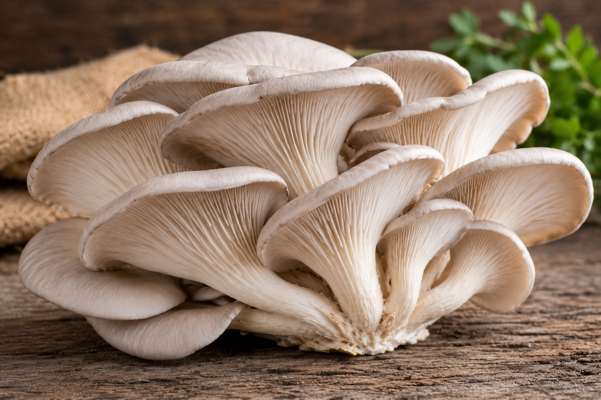
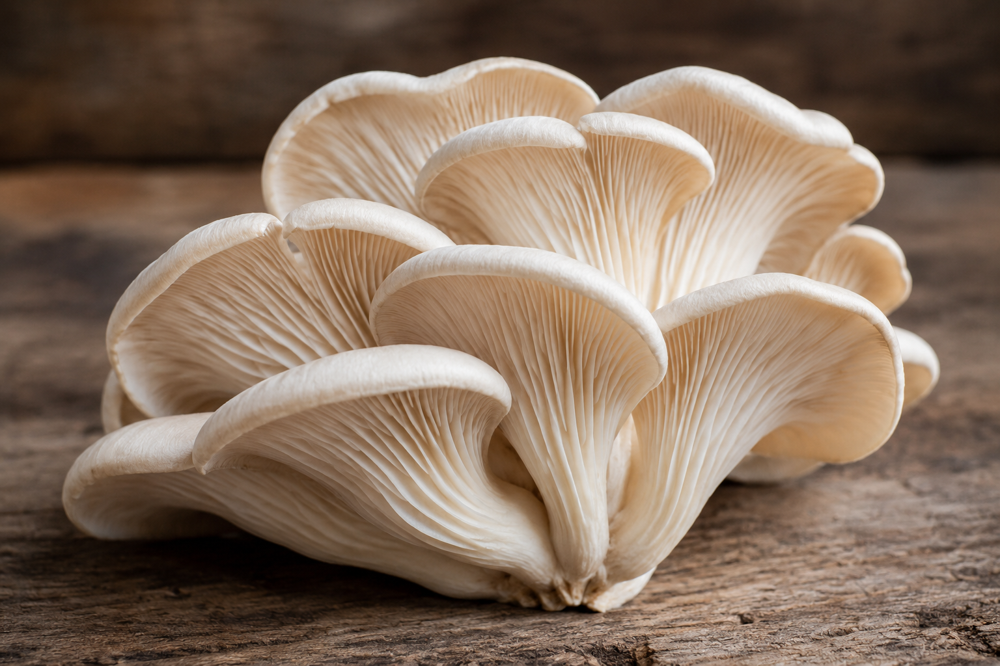

વિટામિન
તેમાં ખાસ કરીને બી-કોમ્પ્લેક્સ વિટામિન જેવા કે નાયસિન, રિબોફ્લેવિન અને પેન્થોથેનિક એસિડ જોવા મળે છે. જે શરીરમાં ઊર્જા બનાવવામાં અને સામાન્ય કાર્યપ્રણાલી જાળવવામાં સહાય કરે છે.
ઓઇસ્ટર મશરૂમ્સ એક નરમ ટેક્સચરવાળી, પૌષ્ટિક અને સરળતાથી રાંધાઈ શકે એવી ખાદ્ય વર્ગ છે. તે રોજિંદા ભોજનમાં ઉમેરો તો સ્વાદ પણ વધે અને શરીરને જરૂરી પોષક તત્ત્વો પણ મળે.

ઓઇસ્ટર મશરૂમ્સ એવા ખાદ્ય મશરૂમ્સ છે જે શંખ જેવા આકાર, હળવા સ્વાદ અને નરમ બંધારણથી જાણીતા છે. તે કુદરતી રીતે ઝડપથી વધે છે અને વિવિધ વાનગીઓમાં સરળતાથી વાપરી શકાય છે. શેતાણ ખેતર અને આધુનિક રોપણ પ્રણાલીમાં તેની ઉત્પાદક્ષમતા અને પોષક મૂલ્યના કારણે તેનું ગુણવત્તાયુક્ત ઉમેરા તરીકે તેની ખાસ માંગ રહે છે.
ઓઇસ્ટર મશરૂમ્સમાં વિટામિન, ખનિજ અને વનસ્પતિજન્ય પ્રોટીનનું સંતુલિત પ્રમાણ હોય છે.
તેમાં ખાસ કરીને બી-કોમ્પ્લેક્સ વિટામિન જેવા કે નાયસિન, રિબોફ્લેવિન અને પેન્થોથેનિક એસિડ જોવા મળે છે. જે શરીરમાં ઊર્જા બનાવવામાં અને સામાન્ય કાર્યપ્રણાલી જાળવવામાં સહાય કરે છે.
પોટેશિયમ, ફોસ્ફરસ, લોહતત્ત્વ અને તાંબું જેવા ખનિજ તત્ત્વો શરીરના પાચન, રક્તસંચાર અને સ્નાયુઓની કાર્યક્ષમતા માટે મહત્વપૂર્ણ છે.
ઓઇસ્ટર મશરૂમ્સમાં વનસ્પતિજન્ય પ્રોટીન મળે છે. તેથી તે સ્નાયુઓની મરામત, હાર્મોન ઉત્પાદન અને સંતોષકારક ભોજન માટે ઉત્તમ વિકલ્પ બની શકે છે.
સંતુલિત આહારના ભાગરૂપે ઓઇસ્ટર મશરૂમ્સ અનેક રીતે લાભદાયક બની શકે છે.
ઓઇસ્ટર મશરૂમ્સ બહુવિધ વાનગીઓમાં સરળતાથી વાપરી શકાય છે. તેનો સ્વાદ હળવો તેથી અન્ય સ્વાદો સાથે સહેલાઈથી મેળ ખાય છે.

લસણ, હળવો મસાલો અને થોડું તેલ અથવા બટર સાથે સાંતળી શકાય છે.
સૂપ, સ્ટ્યૂ, ગ્રેવી, નૂડલ્સ અને પાસ્તામાં ઉત્તમ સ્વાદ આપે છે.
ચપાતી, ભાત અથવા રોટલી સાથે શાક તરીકે પીરસી શકાય છે.
હળવા તીખા મસાલા અને કાળા મરી સાથે તેનો કુદરતી સ્વાદ વધુ સરસ લાગે છે.